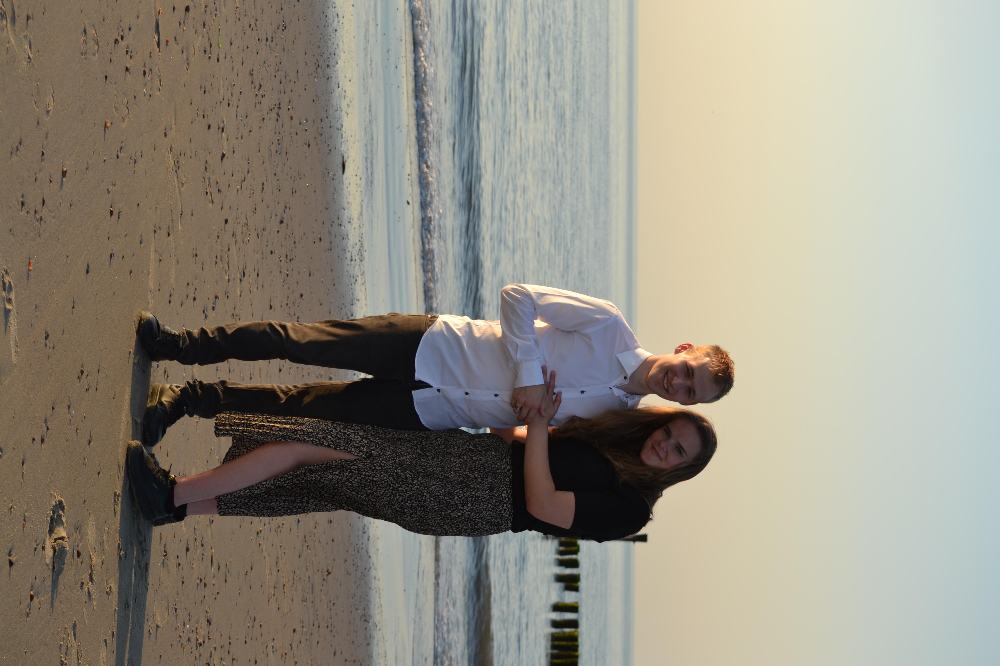

Ik ben Jaap-Jan Bart.
Ik ben 18 jaar en kom uit Yerseke.
Ik woon thuis bij mijn ouders en mijn zusje. Ik heb 2 getrouwde zussen, 1 van mijn zussen heeft een dochtertje. Dus
trotse oom...
Ik vind het leuk om te gamen ook werk ik vrij veel, maar het liefst ben ik bij mijn vriendin.
Daarnaast ben ik Christelijk.
Hiervoor heb ik op het Calvijn College in Goes gezeten, daar heb ik VWO gedaan, maar uiteindelijk ben ik geslaagd
met een Havo diploma.
|
Kenmerken van mij
|
|
Sportief
|
|
Stil
|
|
Betrouwbaar
|
|
Bedachtzaam
|
|
Vergeetachtig
|